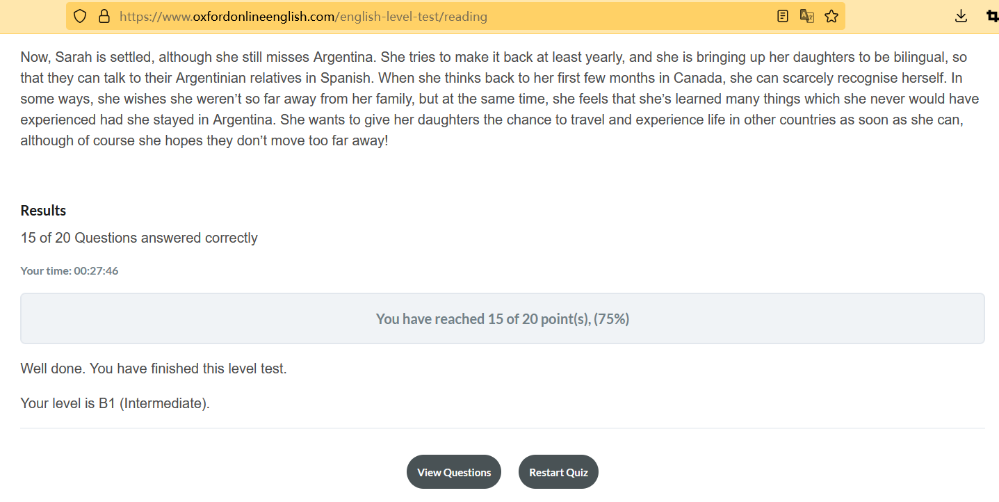

英语学习方法
英语学习方法-听说篇
- 沉默的学习者
聆听，输入 > 输出
静默期
强迫开口说话是无效的
”需要假说“ 只要去国外，就能学会外语 - 语言石化
缺乏正确的输入，无法提升语言能力
2.1基本语言石化（只能用最简单的词汇进行交流）牙牙人
2.2中等水平语言石化，秀水街游魂，局限于特定场景交流
2.3托福雅思慈善家
2.4北美文盲
2.5棍下哑巴
上学校比自己多听多阅读，效率是低的
输入不足的情况下，逼迫输出没有意义，甚至适得其反。
海量的输入才能带来流利的输出 - 有趣 足量 可理解
带有文字稿，语音和文字的关系
循序渐进 语料重复
用故事增加输入和理解
找到“心流”，你喜欢的英语材料，才能带来上瘾的进步动力英语学习方法-阅读篇
- 语法的失败
- 输入的奥秘
- 阅读的力量
阅读阶梯理论
如何测试自己的阅读分数？
https://www.oxfordonlineenglish.com/english-level-test/reading
牛津大学在线网站测试，一共20道题

english-level-test b1 level相当于雅思的4-5分的水平。